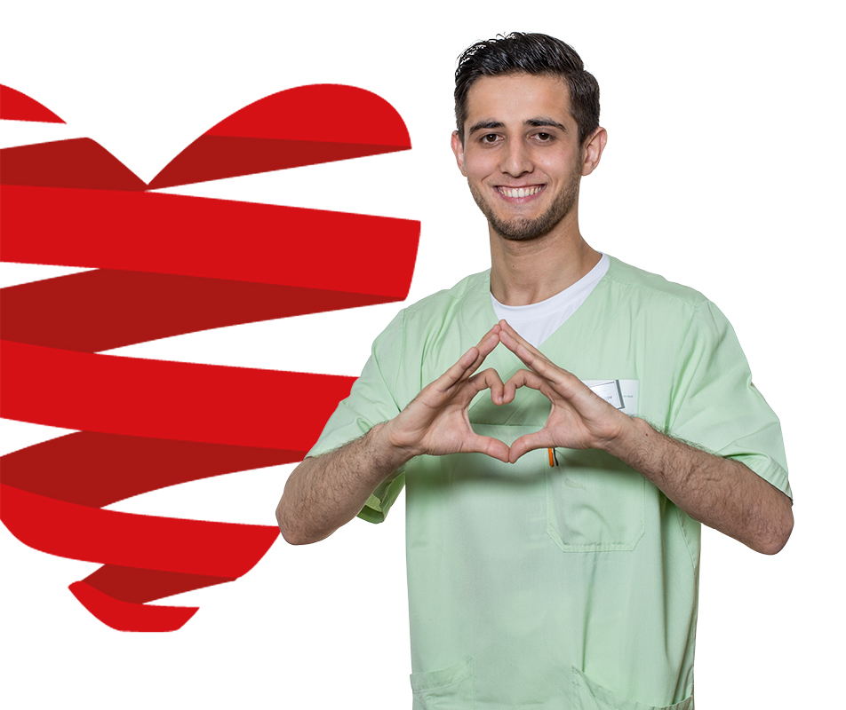

Ausbildung mit Herz
Ausbildung möglich – Pflege, der Beruf mit Zukunft
Wir bieten Ihnen die Möglichkeit, einen Beruf mit Zukunft zu erwerben. Fragen Sie uns über die Chancen und den Verlauf einer Ausbildung in unserer Einrichtung, in St. Cyriak Wohnen und Pflege.
Freiwilliges Soziales Jahr
Du hat Interesse an einem freiwilligen sozialen Jahr, dann melde Dich bei uns. Es gibt die Möglichkeit ein ganzes Jahr soziale Erfahrung im Umgang durch Unterstützung älterer pflegehilfsbedürftiger Menschen in deren Alltag kennenzulernen. Außerdem besteht die Möglichkeit, ein sog. Flexi-FSJ oder auch ein sog. BFD (Bundes-Freiwilligen-Dienst) in unserer Pflegeeinrichtung zu machen.
Bei Bedarf sind wir Dir bei der Wohnungssuche behilflich.
Haben wir Dein Interesse geweckt? – Dann melde ich doch einfach bei uns.
Weitere Infos erhälst Du bei:
Anja Hermann
Tel.: 07723 9304 160
anja.hermann@st-cyriak.de
Wir freuen uns darauf, Dich kennen zu lernen!
Ausbildung zum Altenpflegehelfer
Sie schließen die Ausbildung mit einem anerkannten Helferberuf ab. Die theoretische Ausbildung ist in Villingen oder Donaueschingen möglich. Die praktische Ausbildung erfolgt bei uns im Haus.
Bei Interesse darfst Du dich gerne bei uns melden.
Nähere Infos bei:
Weitere Infos erhälst Du bei:
Anja Hermann
Tel.: 07723 9304 160
anja.hermann@st-cyriak.de
Ausbildung zur Pflegefachkraft (w/m/d)
Sie schließen die Ausbildung mit einem Examen ab. Sie haben eine hervorragende Ausbildung mit vielen Möglichkeiten in unterschiedlichen Gesundheitsberufen. Die theoretische Ausbildung ist in Villingen oder Donaueschingen möglich. Die praktische Ausbildung wird durch erfahrene Praxisanleitung, wie auch in unserem Ausbildungsstützpunkt „Skills lab“ vertieft.
Interesse? Dann einfach melden!
Ansprechpartner:
Anja Hermann
Tel.: 07723 9304 160
anja.hermann@st-cyriak.de
Wir freuen uns darauf, Dich kennen zu lernen!